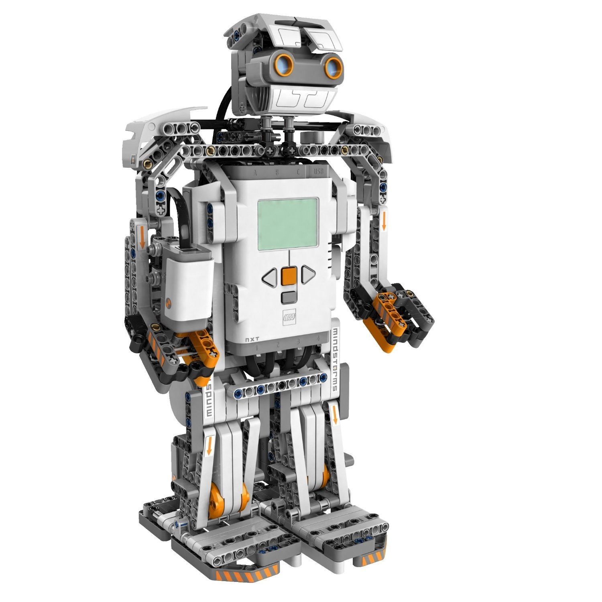
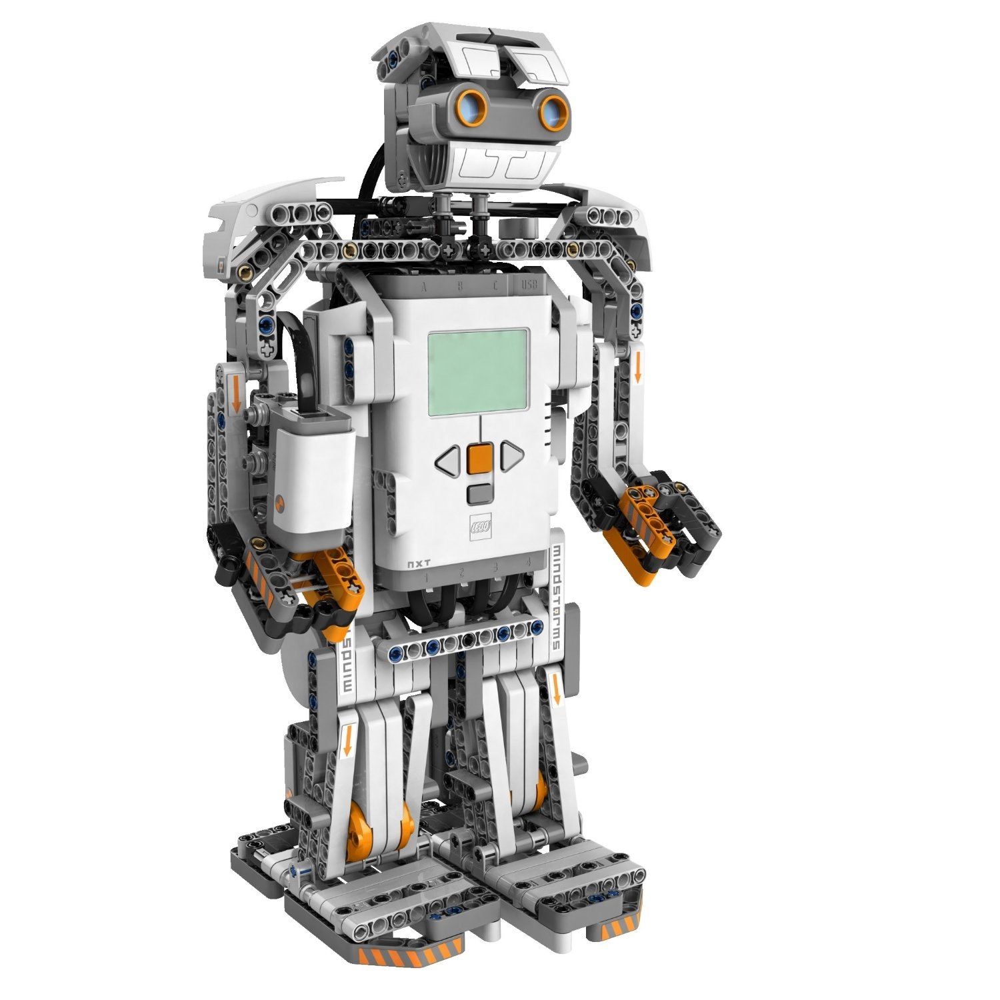
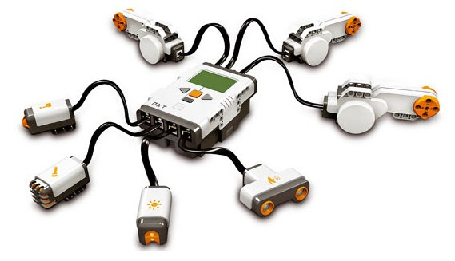
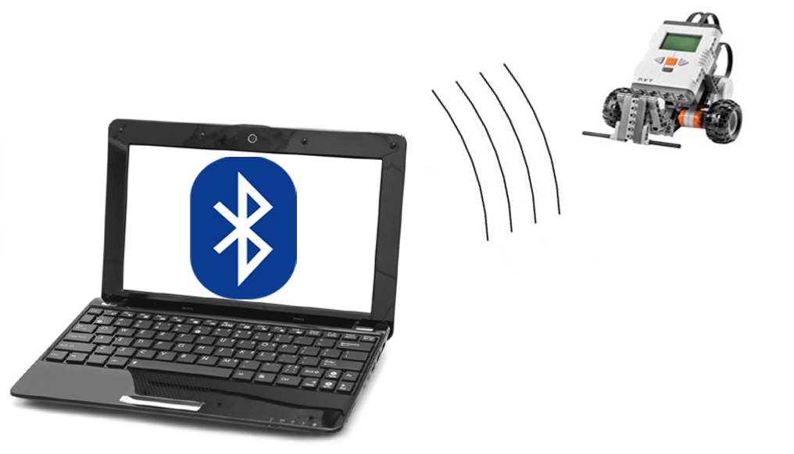
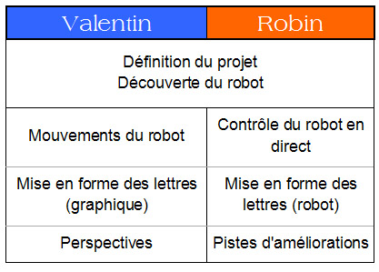
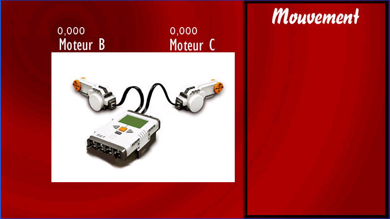
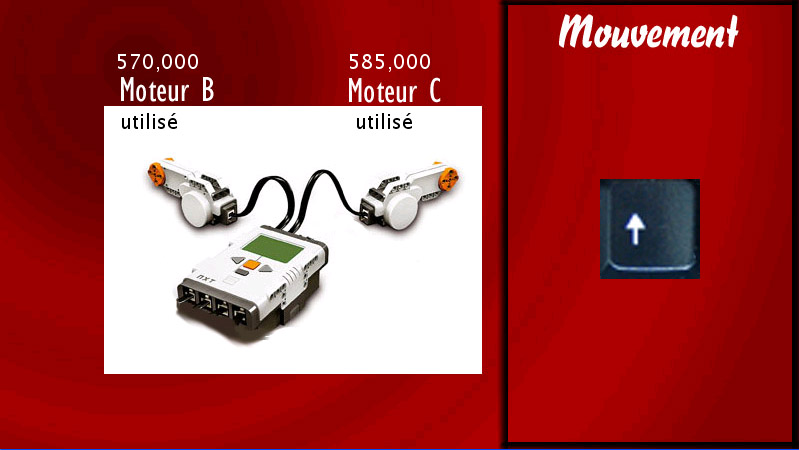
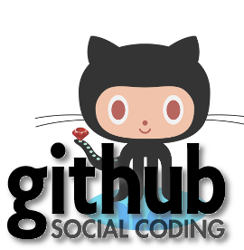

Robot mobile
Lego Mindstorms NXT
BRAZEAU Robin
DISSLER Valentin
Projet ISN 2013

BRAZEAU Robin
DISSLER Valentin
Projet ISN 2013
une brique intelligente, différents capteurs, des actionneurs



Connexion du robot :
Piloter un moteur :
Récupérer les données d'un capteur :



Void KeyPressed ()
if (key == CODED) { //si une touche est pressée
if (keyCode == UP) { //si cette touche est "UP"
lego.motorForward(LegoNXT.MOTOR_B, 100); // Moteur B avance
lego.motorForward(LegoNXT.MOTOR_C, 100); } // Moteur C avance
if (keyCode == DOWN) { //si cette touche est "DOWN"
lego.motorForward(LegoNXT.MOTOR_B, -100); // Moteur B recule
lego.motorForward(LegoNXT.MOTOR_C, -100); } // Moteur C recule
if (keyCode == LEFT) { //si cette touche est "LEFT"
lego.motorForward(LegoNXT.MOTOR_B, 100); // Moteur B avance
lego.motorHandBrake(LegoNXT.MOTOR_C); } // Moteur C s'arrête
if (keyCode == RIGHT) { //si cette touche est "RIGHT"
lego.motorForward(LegoNXT.MOTOR_C, 100); // Moteur C avance
lego.motorHandBrake(LegoNXT.MOTOR_B); } // Moteur B s'arrête
}
Void KeyPressed ()
if (key == CODED) { //si une touche est pressée
if (keyCode == CONTROL) { // si cette touche est "CONTROL"
lego.motorHandBrake(LegoNXT.MOTOR_B); //Moteur B s'arrête
lego.motorHandBrake(LegoNXT.MOTOR_C); }//Moteur C s'arrête
SI (une touche est pressée)
SI (cette touche est "CONTROL")
ALORS Moteur B est arrêté,
Moteur C est arrêté
FIN_SI
FIN_SI
Void KeyPressed ()
if (key == 't' | key == 'T') { // si la touche "T" est pressée
image(fond, 0, 0); // réinitialisation du fond
fill(0); // couleur du texte : noire
textSize(110); // taille du texte : 110
text("T", 600, 260); // afficher le texte "T" aux coordonnées (600;260)
fill(0); // couleur du texte : noire
textSize(20); // taille du texte : 20
text("utilisé", 120, 130);
// afficher le texte "utilisé" aux coordonnées (120;130)
text("utilisé", 355, 130);
// afficher le texte "utilisé" aux coordonnées (355;130)
Void KeyPressed ()
lego.motorForwardLimit(LegoNXT.MOTOR_B, 100, 1800);
// moteur B avance : puissance=100 rotation=1800°
lego.motorForwardLimit(LegoNXT.MOTOR_C, 100, 1800);
// moteur C avance : puissance=100 rotation=1800°
delay(2000); // pause de 2000ms
lego.motorHandBrake(LegoNXT.MOTOR_B); // moteur B est arrêté
lego.motorForwardLimit(LegoNXT.MOTOR_C, 100, 250);
// moteur C avance : puissance=100 rotation=250°
delay(1000); // pause de 1000ms
lego.motorForwardLimit(LegoNXT.MOTOR_B, 100, 400);
lego.motorForwardLimit(LegoNXT.MOTOR_C, 100, 400);
delay(1000); // pause de 1000ms
lego.motorHandBrake(LegoNXT.MOTOR_C); // moteur C est arrêté
lego.motorHandBrake(LegoNXT.MOTOR_B); // moteur B est arrêté
delay(1000); // pause de 1000ms
lego.motorForwardLimit(LegoNXT.MOTOR_B, -100, 800);
// moteur B recule : puissance=100 rotation=800°
lego.motorForwardLimit(LegoNXT.MOTOR_C, -100, 800);
// moteur C avance : puissance=100 rotation=800°
}

Utilisation d'un espace de travail en ligne GITHUB
Sous licence Creative Commons
CC - BY - NC
Attribution, pas d'utilisation commerciale

Faire déplacer le robot en autonomie grâce à des capteurs (ultrasons, couleurs,...)
Moduler le code
Interface "souris"
L'utilisation du wifi, car meilleure sécurité de connexion